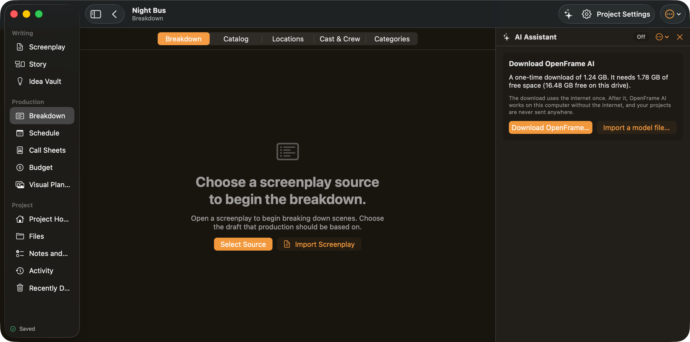

AI Assistant · page 178 of 179 · window 1280×636 pt · dark appearance (light version)
Reached from AI Assistant panel by sidebar. Controls on this screen:
Breakdown (radiobutton)
Catalog (radiobutton)
Locations (radiobutton)
Cast & Crew (radiobutton)
Categories (radiobutton)
Select Source (button, select-source)
Import Screenplay (button)
Offline AI settings (menubutton, ai-settings-menu)
Project: Night Bus. Switch or manage projects (menubutton, project-menu)
Hide Sidebar (button, sidebar-toggle)
All Projects (button, close-project)

WritingScreenplayStoryIdea VaultProductionBreakdownScheduleCall SheetsBudgetVisual PlanningProjectProject HomeFilesNotes and TasksActivityRecently DeletedSavedChoose a screenplay source to begin the breakdown.Open a screenplay to begin breaking down scenes. Choose the draft that production should be based on.AI AssistantOffDownload OpenFrame AIA one-time download of 1.24 GB. It needs 1.78 GB of free space (16.48 GB free on this drive).The download uses the internet once. After it, OpenFrame AI works on this computer without the internet, and your projects are never sent anywhere.Night BusBreakdown